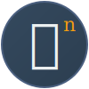

Option 1: Classic ℤₙ
Simple and clean - ℤ with subscript n. Dark blue background with blue accent.
Option 2: ℤ̂ₙ with Hat
Hat/caret above ℤ with subscript n. Red accent for the hat, teal for n.

Option 3: ℤⁿ Superscript
Superscript n (top right). Gradient background with golden accent.
Option 4: Wide ℤ̂ₙ
Wide hat over ℤ with subscript n. Teal hat, golden n, deep blue background.

Option 5: Modern ℤ̂ₙ
Minimalist with rounded corners. Double-line hat accent and circled subscript n.